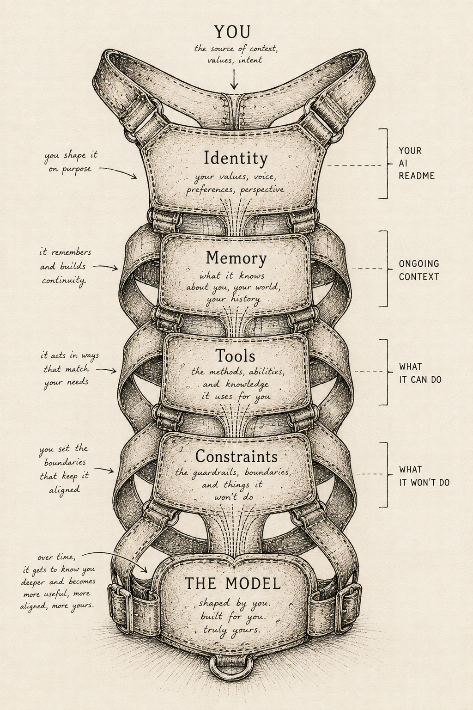

The hard part isn't the code. It's knowing what to say.
or scroll down to start
Most people use AI like a search engine. The ones getting real value have built a system around it. That system isn't code. It's clarity about who you are, what you need, and what you want it to do.
There are four layers to this system. Three of them you build. One is the model.

Start with one file. A plain text document that describes how you think.
Part 1: The Philosophical Layer (Copy this into your AI custom instructions)
Part 2: The Operational Layer (Add this for practical value)
How I think: I process information systematically. I prefer frameworks and patterns. I don't like unexplained jargon.
What I value: Speed with precision. Clarity over completeness. Being wrong fast beats being right slowly.
How I decide: I want options first, then a recommendation. Walk me through the reasoning, not just the conclusion.
My tone: Be direct. Short sentences. Tell me what's weak, not just what's good.
What annoys me: Hedge language like "it might be" or "arguably." Either say it or don't.
Current focus: Shipping products. Data quality. Teams.
ChatGPT: Settings → Personalization → Custom Instructions → paste your identity file
Claude.ai: Create a Project → Add project instructions → paste your identity file
Planning session (when you're figuring something out)
Execution session (when you know what you want and need to do it)
Review session (when you have something and want to check it)
Customizing AI isn't one big setup. It's small deliberate choices that compound. Configure a notification when Claude stops so you're not watching a screen. Set a keyboard shortcut you actually use. Write down one decision rule. These add up to a system that works for you, not against you. Start tonight with the identity file. Everything else follows.
or scroll down to continue
You already have Claude Code running. This track is about the system you build around it — files, rituals, and patterns that turn a generic model into something that actually works with how you think.
A plain text file at your project root. Claude reads it before every conversation.
# [Your Name] — AI Identity File
## Who I am
[Role, domain, what you already know — so Claude doesn't over-explain]
## How I think
[How you process information. Visual? Systematic? Intuition-first?]
## What I value
[Actual values in work. Directness? Precision? Speed? Craft?]
## How I make decisions
[Under uncertainty: do you want options? One recommendation? To think out loud first?]
## Tone and style
[What kind of responses work for you. Length, format, what annoys you.]
## Current focus
[Live projects, active decisions, what's in play right now. Update regularly.]
## Hard constraints
[What Claude should never do without asking first.]Who I am: Builder. Financial data + design + product. 10 years shipping. No ML background.
How I think: Systems over isolated features. I debug by asking why, not by guessing.
What I value: Clarity. Precision. Not being over-explained.
How I decide: Walk me through the problem first. Then options. Then a single recommendation with reasoning.
Tone: Direct. Short sentences. Code examples when helpful. Tell me what's weak.
Current focus: Closing financial readiness. AR/AP matching. Data quality gates.
Hard constraints: Never run a deploy without asking first. No Netherlands-specific content publicly visible.
Flat files in ~/.claude/projects/<project>/memory/. Four types that matter:
user_*.md — who you are, how you workfeedback_*.md — corrections and confirmed approachesproject_*.md — live decisions, what's in progressreference_*.md — where to find external informationEach has frontmatter: name, description, type. An index file MEMORY.md has one line per memory and is always loaded. Claude reads these at the start of every conversation.
Different session types need different opening frames. Pick the right one.
Planning session (figuring something out, not executing)
Execution session (you know what you want, go fast)
Review session (critical feedback on existing work)
The most underused feature for non-engineers.
This shifts Claude from "autocomplete" to "thinking partner with selective execution." The execution happens faster because the thinking happened first.
Example: add a macOS notification that fires when Claude stops or needs input.
The point isn't the notification. The point is that every small deliberate customization compounds. This took 2 minutes. It changed how the session feels. That's what building a system around the intelligence looks like.